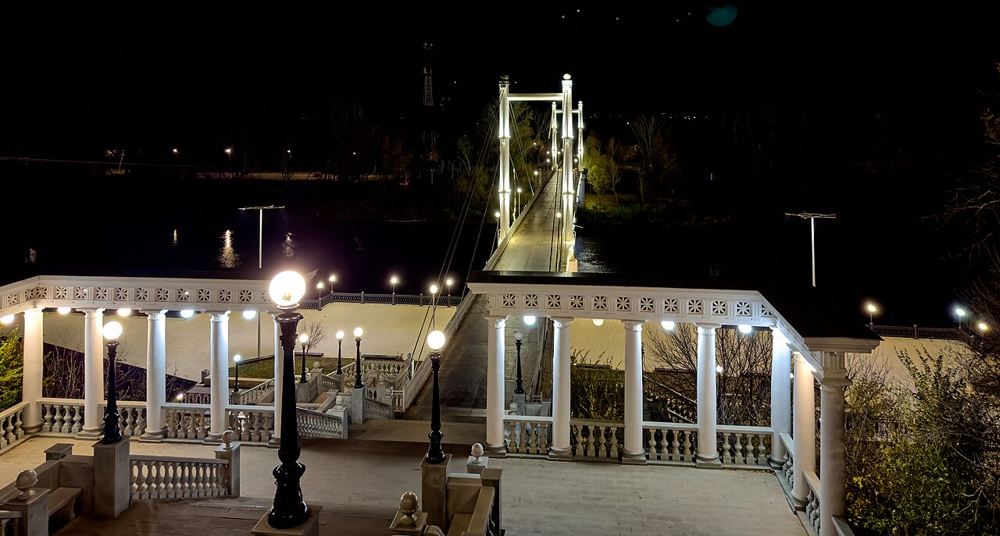

📷

Открой Оренбуржье
Почему с нами удобно
📍
Точные координаты на карте
✍️
Подробные описания от местных жителей
⭐️
Актуальная информация и отзывы путешественников
Популярные достопримечательности

Караван-Сарай
Историческое место | г. Оренбург
Автор kraeved42
Координаты 51.7640, 55.1076
Фото 24
Подробнее
Бузулукский бор
Природный объект | Бузулукский район
Автор borov32
Координаты 52.7640, 54.1076
Фото 14
Подробнее
Соляные озёра Соль-Илецка
Природный объект | Соль-Илецкий округ
Автор solevoy52
Координаты 53.7640, 53.1076
Фото 1022
Подробнее
Губернаторский музей
Музей | г. Оренбург
Автор meseum52
Координаты 54.7640, 52.1076
Фото 102
Подробнее
Национальная деревня
Историческое место | г. Оренбург
Автор derevenskiyVolk
Координаты 54.1000, 52.9976
Фото 12
ПодробнееКрасоты Оренбуржья


Наши Партнеры